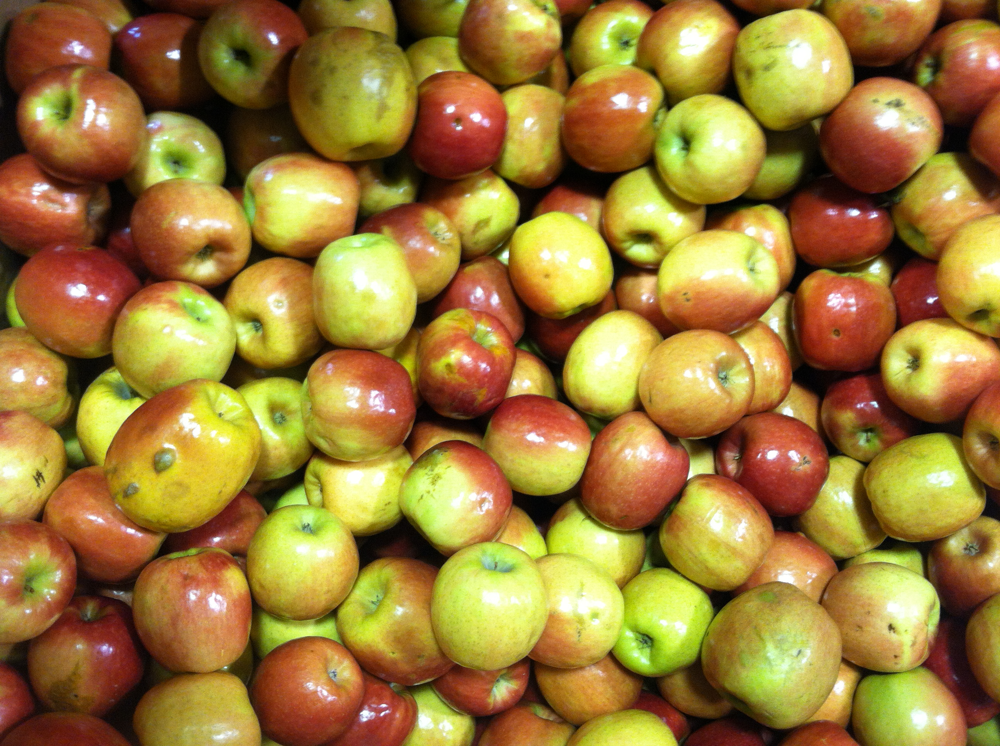

j3
I'm an aspiring designer/developer who finds inspiration in great ux|i, coffee, todo apps, and my family. I intend for this to be a place where I tinker with the skills I acquire along the way. Take a look around - things are bound to change.




HTML/CSS
80
Ruby/Rails
32
JS/jQuery
25
Total Hours
150
My goal over the coming weeks is to continually introduce more interactivity and responsiveness. This will come with the introduction of media queries and changing pxs to ems. In addition to introducing jQuery.
The above graph highlights the hours I've spent over the course of 4 months on the respective languages (and framework).
It is not the strongest of the species that survive, nor the most intelligent, but the one most responsive to change. ~ Darwin